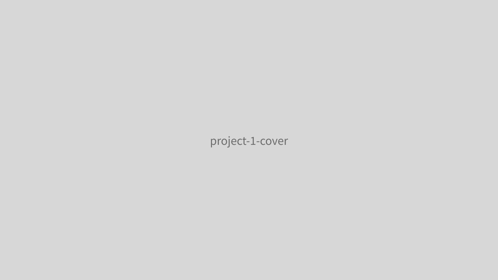
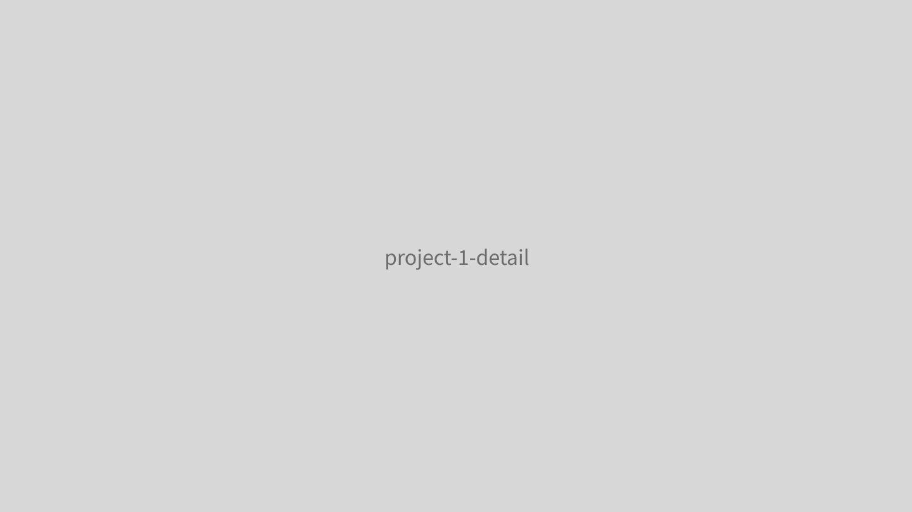

為品牌打造一套統一、可擴展的設計元件系統，確保產品在各平台上的一致性與開發效率。

隨著產品線擴張，團隊面臨設計語言不一致的問題。各產品的色彩、元件樣式、互動行為各自為政，導致使用者體驗碎片化，開發成本也隨之增加。
主導元件庫的規劃、設計與文件撰寫。與前端工程師密切合作，確保設計稿能被精確實現，同時制定元件的使用規範與命名原則。

從基礎的色彩系統、字型級距、間距規範開始，逐步建構出按鈕、輸入框、卡片、彈窗等核心元件。每個元件都包含多種狀態與變體，並附上清晰的使用指南。
元件庫上線後，設計交付時間縮短了約 40%，跨產品的視覺一致性大幅提升。目前已被團隊內三個產品線採用。